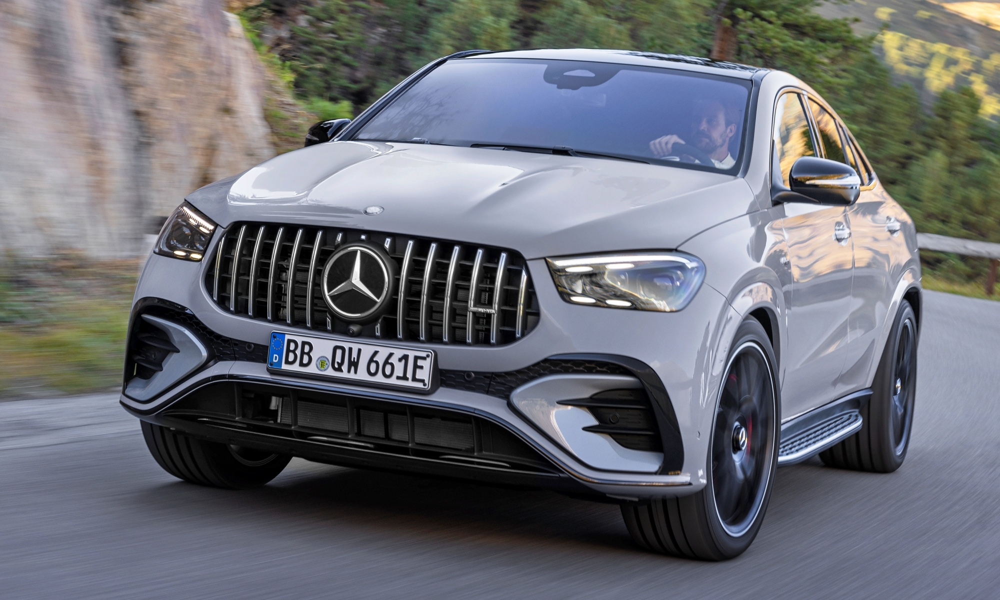

Mercedes GLE

| Diseño | Parrilla del radiador con dos lamas cromadas en plata hightech en diseño para un SUV con incrustaciones de cromo y perfiles verticales con parte delantera en negro de alto brillo y estrella Mercedes integrada |
| Motor | 280 CV |
| Interior | Listón de adorno cromado en la línea de las ventanillas y la línea de cintura, además de protección técnica de bajos delantera y trasera. |